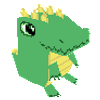
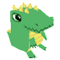

Criação de modelos tridimensionais leves e eficientes, ideais para engines de jogos e aplicações interativas que exigem performance sem comprometer a qualidade visual.
Ferramentas: Crocotile3D e Godot
Me contate
Sobre mim
Designer e programador, especializado em modelagem low poly e desenvolvimento de jogos focado em eficiência e detalhes.
Com uma base sólida em programação e experiência em softwares de design 3D, eu crio modelos otimizados e visualmente impactantes para uso em jogos, animações e aplicações digitais.
Minhas habilidades incluem tanto a parte técnica do código quanto a sensibilidade estética necessária para dar vida a ambientes e personagens virtuais de forma prática e funcional.
Línguas faladas: 


Tecnologias:  

Crocotile 3D
Eu uso o Crocotile 3D para criar modelos 3D low poly de uma forma rápida e intuitiva. O sistema de modelagem por tiles me permite desenhar e construir direto no espaço tridimensional, o que deixa o processo mais fluido e me dá controle total sobre cada detalhe.
Com essa abordagem, consigo desenvolver objetos e cenários que são leves e otimizados, perfeitos para games que pedem um visual estilizado e performance eficiente.
Para mim, o Crocotile é uma ferramenta que facilita a conexão entre design e funcionalidade, permitindo que eu traga meus conceitos de forma prática e fiel para os projetos.
Game Development
Minhas habilidades em programação e design de jogos me permitem desenvolver jogos tanto em 2D quanto em 3D, explorando mecânicas inovadoras e visuais impactantes. Além disso, estou sempre buscando formas de melhorar a jogabilidade, criando experiências que sejam tanto desafiadoras quanto gratificantes para o jogador.
Web Development
No campo do design e desenvolvimento web, meu foco é em criar o Front-end de sites modernos e responsivos, com uma experiência de usuário intuitiva e funcionalidade impecável. Entendo que cada site é uma extensão da identidade de uma marca, então me dedico a criar layouts únicos que se adaptem perfeitamente à personalidade e aos objetivos de cada projeto.
Trabalhei como Designer e Desenvolvedor Web na Casa Civil do Estado do Rio de Janeiro, onde fui responsável por criar sites e desenvolver materiais de design voltados para comunicação institucional.
Minhas atividades incluíram:
Desenvolvimento Web: Criação e manutenção de websites institucionais com foco em usabilidade, design responsivo e acessibilidade, garantindo uma experiência de navegação intuitiva e otimizada.
Design Gráfico: Desenvolvimento de layouts e elementos visuais para peças institucionais digitais, aplicando identidade visual coesa e adequada às diretrizes do governo.
Produção de Vídeos: Planejamento, filmagem e edição de vídeos institucionais, desde vídeos informativos a campanhas audiovisuais, com foco em clareza de mensagem e impacto visual.